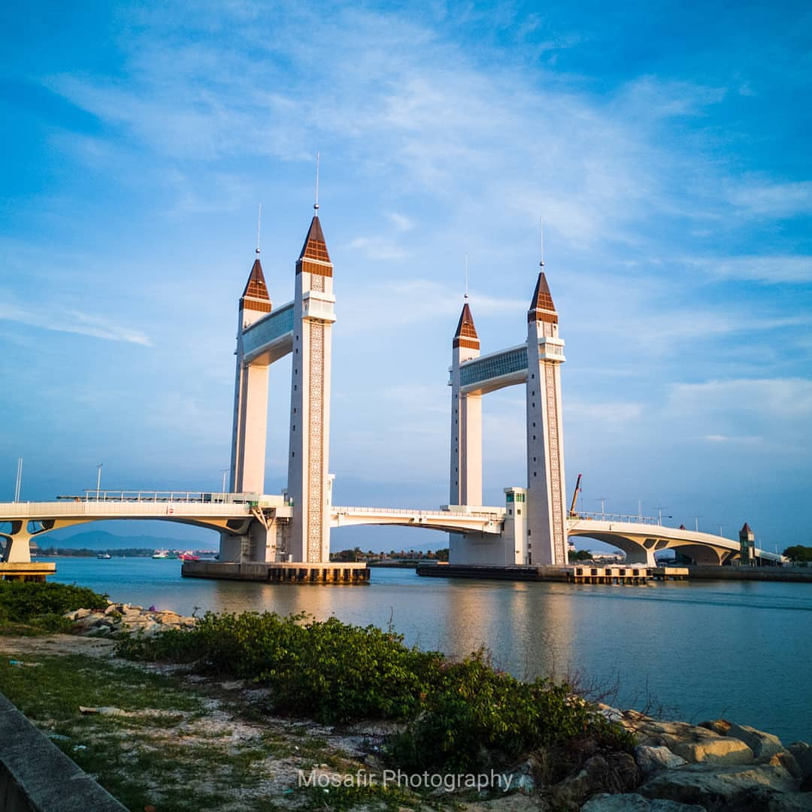

Visit Terengganu!
Enjoy culture and sports in this vibrant distict close to the center of Kuala Terengganu
Top 3 activities to do at Terengganu
Pasar Payang
The Central Market which is known as Pasar Payang is located on the side of Terengganu River and it is the most well-known tourism destination in Kuala Terengganu

Terengganu Drawbridge
Kuala Terengganu Drawbridge is a part of the projects for the East Coast Economic Region (ECER). It is the first drawbridge built in Malaysia and Southeast Asia

Pasar Payang
The Central Market which is known as Pasar Payang is located on the side of Terengganu River and it is the most well-known tourism destination in Kuala Terengganu
Your guide
"I have lived at Terengganu for over 19 years, so I can show you all of its best parts and hidden secrets"
Ahmad Hafizi Sapie